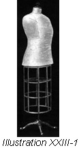
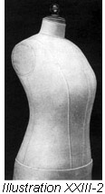
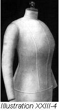
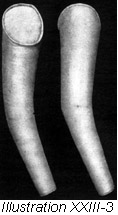

1926—The New-Way Course in Fashionable Clothes-Making
Lesson 23—Padding the Dress Form
To Pad a Dress Form (Illustrations 23-1, 2, 3 and 4)
Cotton batting is used to pad out dress forms so that they conform with the requirements of the individual figure. This padding must be done very carefully; it must be applied smoothly and evenly—not in lumps or rolls. Be sure, before basting the padding to the form, that it is flat and even and that it will lay smoothly beneath the lining.
- First apply cotton batting wherever the form is too small.
- Place the lining on the form and note carefully where more padding is necessary. Take the lining off and add cotton. Before the lining is again placed on the padded form, pin or baste a square of muslin on the shoulders as seen in Illustration 23-1, which makes the finishing of the armcye much easier.
- Replace the lining on the figure, hooking it up first from the waistline to the neck, then from the waistline to the hips.
- When the form is correctly padded out to fit the lining, cut a piece of muslin the shape of the armcye. Be sure that you use staunch muslin. Turn in the edges and oversew this armcye-shaped muslin to the edge of the tape, binding the armcye. On the lining. Illustration 23-2.
- The muslin keeps the armcye in shape and affords splendid protection for the cotton batting, keeping it in place and separating it from any material later used in the making of a dress.
Padding the Sleeves
Padded sleeves are most convenient in the making of dresses and coats. You will find your padded sleeves especially valuable when you make tailored dresses. It is really a very simple process if you follow the step-by-step directions given here carefully.
- After the sleeve of the lining is stitched and finished, turn it right side out. Cut a piece of cardboard and cover it with muslin. The cardboard should be cut round and just large enough to fit snugly in the bottom of the sleeve.
- Turn the sleeve up to make a finish at the bottom and oversew the covered cardboard to this edge.
- Now fill the sleeve with cotton batting. Do not allow the batting to form in lumps as the sleeve must be very smooth and even.
- Cut another piece of muslin the shape and size of the opening at the top of the sleeve.
- Baste this to the edge of the top of the sleeve, and bind the edges of the muslin and sleeve together.
- If you have followed these directions correctly, you now have a padded sleeve over which you can fit the sleeves in the dress you will soon make. Illustration 23-3.
- Your padded sleeves may be attached to the waist at the armcye with heavy basting. This will make a complete figure on which your gowns may be fitted. Illustration 23-4.
But what, you ask, shall I do about the skirt part of my lining? The skirt should be made in exactly the same way as the skirt for the loose model pattern. After the seams are stitched in the skirt, the hem may be basted up and the skirt put on the belt according to the marks made on the belt for adjustment. In fitting skirts on the form, this lining may be used to obtain the correct skirt length, and the hip and waist adjustments.
Always bear in mind, in padding dress forms, that you are making a figure to correspond as nearly as possible with your own. Take pains to make it correct in every detail for this form will act as the basis, the foundation upon which all your pretty things to wear will be constructed. If you find, after padding your form, that measurements of the lining-covered form do not exactly correspond with your own, remove the lining and refit it. Change the padding to fit lining and again measure the padded form. Do not leave this lesson until you have so padded and adjusted your form that it is an identical duplicate of your own figure. You will find it very valuable to you in later lessons.